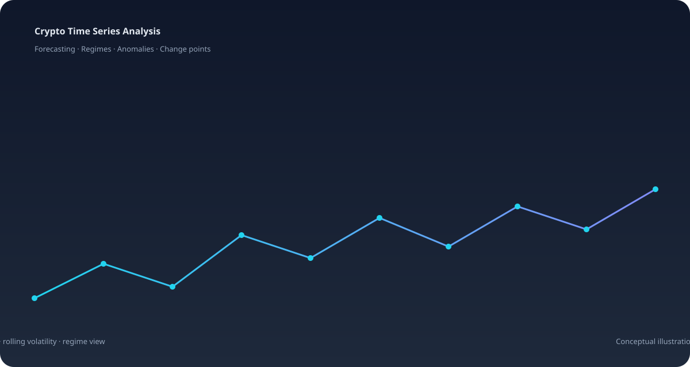

Raw OHLCV Series
Historical Bitcoin price, volume, and candle data ingested and standardized into cleaned Parquet datasets with audit metadata.
A research-led time series project that combines data preparation, feature engineering, forecasting replay, market-regime inference, anomaly detection, and change-point analysis around historical BTC market data, exposed through an interactive Streamlit dashboard.
Bitcoin time series carry rich structure in returns, volume, and rolling risk. Without a consistent analysis loop, it is difficult to separate signal from noise or to compare forecasting approaches fairly.
Crypto Time Series Analysis was built to run raw OHLCV data through a chronological pipeline — audit, feature engineering, modelling, and evaluation — and surface the results through an interactive dashboard covering forecasts, regimes, anomalies, and change points.
A transparent, leakage-free chronological pipeline reveals whether model complexity delivers real gains over baselines on historical crypto market behavior.
Historical Bitcoin price, volume, and candle data ingested and standardized into cleaned Parquet datasets with audit metadata.
Returns, volume, rolling volatility, and market-structure features built across 7, 14, 30, and 60-bar windows with return lags.
A 70 / 15 / 15 train-validation-test split keeps later observations out of training, with trailing rows purged so target labels never cross partition boundaries.
Four notebook stages take raw observations to prepared datasets, model artifacts, scores, and research figures.
Historical OHLCV and engineered time-series features.
LightGBM and CatBoost replayed over chronological windows.
GMM / HMM regimes, Isolation Forest scores, CUSUM change points.
Interactive Streamlit exploration of data, forecasts, and states.
Every feature uses only data available at prediction time. Targets are strictly shifted so no future information enters training.
MAE, RMSE, and sMAPE are reported consistently under time-ordered splits, with walk-forward testing for robust assessment.
A Streamlit application brings data quality, forecasts, volatility, regimes, anomalies, and change points into one explorable view.

Historical replay shows how LightGBM and CatBoost behave against baselines over a fixed window, while regime and anomaly outputs help characterize market states rather than predict them.
Audit and clean, engineer features, fit and compare models, then evaluate and export — each stage reproducible from source.
Gaussian Mixture and Hidden Markov models surface inferred market states and transition probabilities across the selected window.
Isolation Forest scores flag unusual observations, and CUSUM timestamps mark structural breaks alongside price and volatility.
MAE, RMSE, and sMAPE are reported consistently across forecasting experiments, interpreted together rather than in isolation.
The Streamlit dashboard lets users inspect datasets, feature distributions, model replay, volatility, regimes, and anomalies.
Models fitted on past regimes can degrade when volatility, correlation, or liquidity conditions change abruptly.
Short-horizon returns are inherently noisy, and forecasting advantage over strong baselines is often modest.
Forecasting replays saved models over past windows. It is not a forward forecast, holdout evaluation, or live trading signal.
Prepared Parquet data and model artifacts are generated locally and are not bundled; they must be provisioned separately for deployment.
Historical relationships do not guarantee future behavior. Nothing in this project is investment, trading, or financial advice.
Shift model selection and features when volatility or correlation structure changes.
Explore additional market-structure and cross-sectional features while maintaining strict leakage control.
Evaluate deep-learning time-series wrappers under the same chronological conditions as the tree baselines.
Monitor model behaviour and regime transitions across new windows as data becomes available.
Running forecasting, regime, anomaly, and change-point analysis under identical chronological conditions, with leakage-free features and clear metrics, produces clearer insight than chasing a single back-test score.
Chronological validation and leakage-free features keep claims honest.
Forecasting, regimes, anomalies, and change points each reveal a different layer of market structure.
An interactive dashboard makes model behaviour and outputs inspectable.
The stack is designed to absorb better models and richer data.
Source code and implementation.